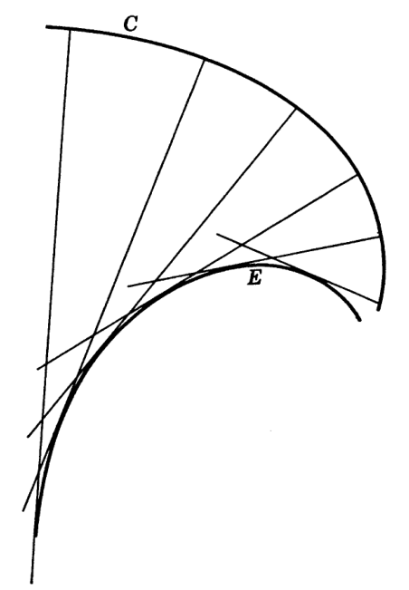
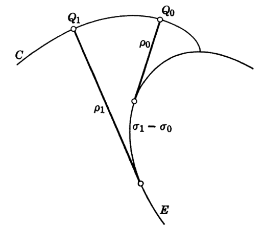
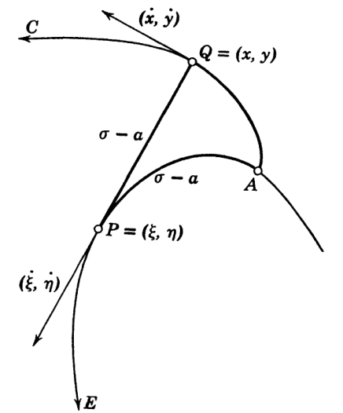
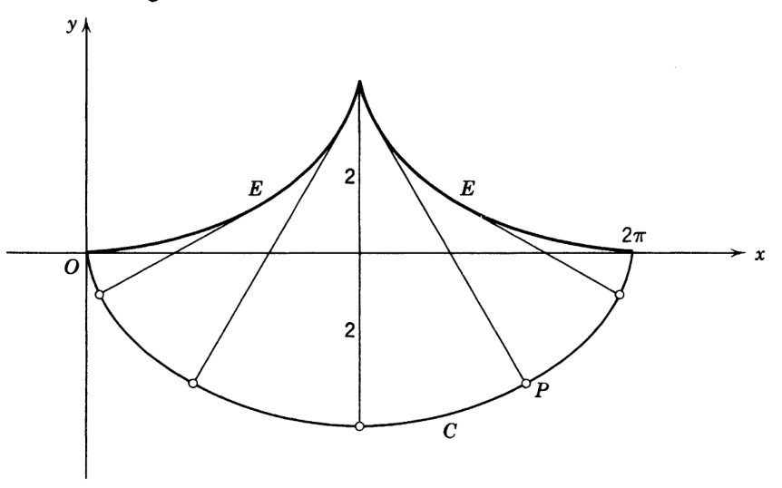
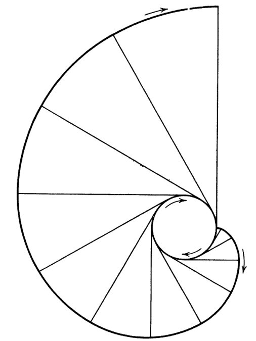
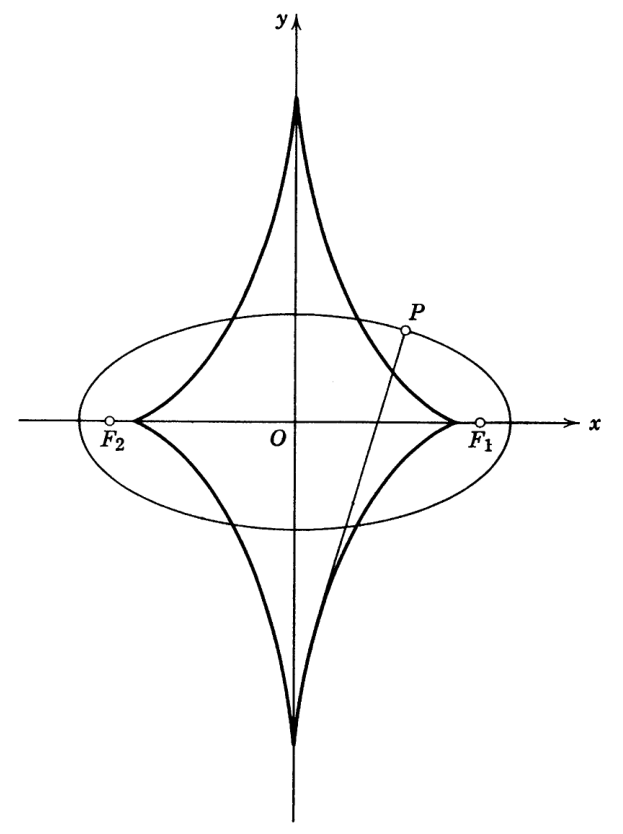

第 359 页把曲线 C C C E E E C C C s s s C C C x = x ( s ) , y = y ( s ) x=x(s),\ y=y(s) x = x ( s ) , y = y ( s ) C C C s s s ( ξ , η ) (\xi,\eta) ( ξ , η )
ξ = x − ρ y ˙ , η = y + ρ x ˙ , (58)
\xi=x-\rho\dot y,\qquad \eta=y+\rho\dot x,\tag{58}
ξ = x − ρ y ˙ , η = y + ρ x ˙ , ( 58 ) 其中 κ = 1 / ρ = x ˙ y ¨ − y ˙ x ¨ \kappa=1/\rho=\dot x\ddot y-\dot y\ddot x κ = 1/ ρ = x ˙ y ¨ − y ˙ x ¨ κ , ∣ ρ ∣ \kappa,|\rho| κ , ∣ ρ ∣ C C C
对 x ˙ 2 + y ˙ 2 = 1 \dot x^2+\dot y^2=1 x ˙ 2 + y ˙ 2 = 1 x ˙ x ¨ + y ˙ y ¨ = 0 \dot x\ddot x+\dot y\ddot y=0 x ˙ x ¨ + y ˙ y ¨ = 0 x ˙ y ¨ − y ˙ x ¨ = 1 / ρ \dot x\ddot y-\dot y\ddot x=1/\rho x ˙ y ¨ − y ˙ x ¨ = 1/ ρ
x ¨ = − 1 ρ y ˙ , y ¨ = 1 ρ x ˙ . (59)
\ddot x=-\frac1\rho\dot y,\qquad \ddot y=\frac1\rho\dot x.\tag{59}
x ¨ = − ρ 1 y ˙ , y ¨ = ρ 1 x ˙ . ( 59 ) 将 (58) 对 s s s
ξ ˙ = x ˙ − ρ y ¨ − ρ ˙ y ˙ = − ρ ˙ y ˙ , η ˙ = y ˙ + ρ x ¨ + ρ ˙ x ˙ = ρ ˙ x ˙ ,
\dot\xi=\dot x-\rho\ddot y-\dot\rho\dot y=-\dot\rho\dot y,\qquad
\dot\eta=\dot y+\rho\ddot x+\dot\rho\dot x=\dot\rho\dot x,
ξ ˙ = x ˙ − ρ y ¨ − ρ ˙ y ˙ = − ρ ˙ y ˙ , η ˙ = y ˙ + ρ x ¨ + ρ ˙ x ˙ = ρ ˙ x ˙ , 故 ξ ˙ x ˙ + η ˙ y ˙ = 0 \dot\xi\dot x+\dot\eta\dot y=0 ξ ˙ x ˙ + η ˙ y ˙ = 0 C C C − y ˙ , x ˙ -\dot y,\dot x − y ˙ , x ˙ C C C E E E 渐屈线是各条法线的“包络” （图 A.1）。

图 A.1 渐屈线 E 以 σ \sigma σ s s s
σ ˙ 2 = ( d σ d s ) 2 = ξ ˙ 2 + η ˙ 2 .
\dot\sigma^2=\left(\frac{d\sigma}{ds}\right)^2=\dot\xi^2+\dot\eta^2.
σ ˙ 2 = ( d s d σ ) 2 = ξ ˙ 2 + η ˙ 2 . 因 x ˙ 2 + y ˙ 2 = 1 \dot x^2+\dot y^2=1 x ˙ 2 + y ˙ 2 = 1 σ ˙ 2 = ρ ˙ 2 \dot\sigma^2=\dot\rho^2 σ ˙ 2 = ρ ˙ 2 ρ ˙ ≠ 0 \dot\rho\ne0 ρ ˙ = 0 σ \sigma σ σ ˙ = ρ ˙ \dot\sigma=\dot\rho σ ˙ = ρ ˙ σ 1 − σ 0 = ρ 1 − ρ 0 \sigma_1-\sigma_0=\rho_1-\rho_0 σ 1 − σ 0 = ρ 1 − ρ 0 若所考察的弧上 ρ ˙ \dot\rho ρ ˙ 。
最后这个条件并非多余。若 ρ ˙ \dot\rho ρ ˙ σ ˙ = ρ ˙ \dot\sigma=\dot\rho σ ˙ = ρ ˙ σ \sigma σ σ \sigma σ σ ˙ = − ρ ˙ \dot\sigma=-\dot\rho σ ˙ = − ρ ˙
刚得到的几何关系还可以另一种方式表述。设有一根柔软、不可伸长的线，沿渐屈线 E E E Q Q Q C C C Q Q Q C C C evolute 即由此而来（拉丁语 evolvere 意为退绕）。曲线 C C C E E E 渐开线 。反过来，从任意曲线 E E E C C C E E E C C C

图 A.2 用线作曲线 E 的渐开线 C 为证明这一点，设现在给定的 E E E ξ = ξ ( σ ) , η = η ( σ ) \xi=\xi(\sigma),\ \eta=\eta(\sigma) ξ = ξ ( σ ) , η = η ( σ ) ξ , η \xi,\eta ξ , η σ \sigma σ E E E E E E Q Q Q E E E a a a A A A σ > a \sigma>a σ > a P P P E E E P Q PQ PQ σ − a \sigma-a σ − a − ξ ˙ , − η ˙ -\dot\xi,-\dot\eta − ξ ˙ , − η ˙ σ \sigma σ Q Q Q
x = ξ − ( σ − a ) ξ ˙ , y = η − ( σ − a ) η ˙ . (60)
x=\xi-(\sigma-a)\dot\xi,\qquad y=\eta-(\sigma-a)\dot\eta.\tag{60}
x = ξ − ( σ − a ) ξ ˙ , y = η − ( σ − a ) η ˙ . ( 60 ) 这就是 Q Q Q σ \sigma σ σ \sigma σ
x ˙ = ξ ˙ − ξ ˙ + ( a − σ ) ξ ¨ = ( a − σ ) ξ ¨ , y ˙ = η ˙ − η ˙ + ( a − σ ) η ¨ = ( a − σ ) η ¨ . (61)
\begin{aligned}
\dot x&=\dot\xi-\dot\xi+(a-\sigma)\ddot\xi=(a-\sigma)\ddot\xi,\\
\dot y&=\dot\eta-\dot\eta+(a-\sigma)\ddot\eta=(a-\sigma)\ddot\eta .
\end{aligned}\tag{61}
x ˙ y ˙ = ξ ˙ − ξ ˙ + ( a − σ ) ξ ¨ = ( a − σ ) ξ ¨ , = η ˙ − η ˙ + ( a − σ ) η ¨ = ( a − σ ) η ¨ . ( 61 ) 因为 ξ ˙ ξ ¨ + η ˙ η ¨ = 0 \dot\xi\ddot\xi+\dot\eta\ddot\eta=0 ξ ˙ ξ ¨ + η ˙ η ¨ = 0 ξ ˙ x ˙ + η ˙ y ˙ = 0 \dot\xi\dot x+\dot\eta\dot y=0 ξ ˙ x ˙ + η ˙ y ˙ = 0 P Q PQ PQ C C C C C C E E E E E E ξ ˙ , η ˙ \dot\xi,\dot\eta ξ ˙ , η ˙ C C C
x ˙ x ˙ 2 + y ˙ 2 = η ˙ , y ˙ x ˙ 2 + y ˙ 2 = − ξ ˙ . (62)
\frac{\dot x}{\sqrt{\dot x^2+\dot y^2}}=\dot\eta,\qquad
\frac{\dot y}{\sqrt{\dot x^2+\dot y^2}}=-\dot\xi.\tag{62}
x ˙ 2 + y ˙ 2 x ˙ = η ˙ , x ˙ 2 + y ˙ 2 y ˙ = − ξ ˙ . ( 62 ) 
图 A.3 退绕时的切点 P 与线端 Q 把正交关系 ξ ˙ x ˙ + η ˙ y ˙ = 0 \dot\xi\dot x+\dot\eta\dot y=0 ξ ˙ x ˙ + η ˙ y ˙ = 0 σ \sigma σ
0 = ξ ¨ x ˙ + η ¨ y ˙ + ξ ˙ x ¨ + η ˙ y ¨ = x ˙ 2 + y ˙ 2 a − σ + − x ¨ y ˙ + x ˙ y ¨ x ˙ 2 + y ˙ 2 .
0=\ddot\xi\dot x+\ddot\eta\dot y+\dot\xi\ddot x+\dot\eta\ddot y
=\frac{\dot x^2+\dot y^2}{a-\sigma}
+\frac{-\ddot x\dot y+\dot x\ddot y}{\sqrt{\dot x^2+\dot y^2}}.
0 = ξ ¨ x ˙ + η ¨ y ˙ + ξ ˙ x ¨ + η ˙ y ¨ = a − σ x ˙ 2 + y ˙ 2 + x ˙ 2 + y ˙ 2 − x ¨ y ˙ + x ˙ y ¨ . 所以曲线 C C C Q = ( x , y ) Q=(x,y) Q = ( x , y )
ρ = 1 κ = ( x ˙ 2 + y ˙ 2 ) 3 / 2 x ˙ y ¨ − y ˙ x ¨ = σ − a .
\rho=\frac1\kappa=\frac{(\dot x^2+\dot y^2)^{3/2}}{\dot x\ddot y-\dot y\ddot x}=\sigma-a.
ρ = κ 1 = x ˙ y ¨ − y ˙ x ¨ ( x ˙ 2 + y ˙ 2 ) 3/2 = σ − a . 这也正是 Q Q Q P = ( ξ , η ) P=(\xi,\eta) P = ( ξ , η ) P P P C C C Q Q Q P P P Q Q Q 每条曲线 E E E 。
例
考察摆线 x = π + t + sin t , y = − 1 − cos t x=\pi+t+\sin t,\ y=-1-\cos t x = π + t + sin t , y = − 1 − cos t t t t
ξ = x − y ˙ x ˙ 2 + y ˙ 2 x ˙ y ¨ − y ˙ x ¨ , η = y + x ˙ x ˙ 2 + y ˙ 2 x ˙ y ¨ − y ˙ x ¨ .
\xi=x-\dot y\frac{\dot x^2+\dot y^2}{\dot x\ddot y-\dot y\ddot x},\qquad
\eta=y+\dot x\frac{\dot x^2+\dot y^2}{\dot x\ddot y-\dot y\ddot x}.
ξ = x − y ˙ x ˙ y ¨ − y ˙ x ¨ x ˙ 2 + y ˙ 2 , η = y + x ˙ x ˙ y ¨ − y ˙ x ¨ x ˙ 2 + y ˙ 2 . 稍加计算即得摆线的渐屈线 ξ = π + t − sin t , η = 1 + cos t \xi=\pi+t-\sin t,\ \eta=1+\cos t ξ = π + t − sin t , η = 1 + cos t t = τ − π t=\tau-\pi t = τ − π ξ + π = π + τ + sin τ , η − 2 = − 1 − cos τ \xi+\pi=\pi+\tau+\sin\tau,\ \eta-2=-1-\cos\tau ξ + π = π + τ + sin τ , η − 2 = − 1 − cos τ

图 A.4 摆线摆 这给出制作摆线摆（见第 412 页）的一个简单方法。用长为 4 4 4 P P P P P P P P P t t t
再求圆的渐开线方程。从圆 ξ = cos σ , η = − sin σ \xi=\cos\sigma,\ \eta=-\sin\sigma ξ = cos σ , η = − sin σ a = 0 a=0 a = 0
x = cos σ + σ sin σ , y = − sin σ + σ cos σ .
x=\cos\sigma+\sigma\sin\sigma,\qquad y=-\sin\sigma+\sigma\cos\sigma.
x = cos σ + σ sin σ , y = − sin σ + σ cos σ . 
图 A.5 圆的渐开线 最后求椭圆 x = a cos t , y = b sin t x=a\cos t,\ y=b\sin t x = a cos t , y = b sin t
ξ = x − y ˙ x ˙ 2 + y ˙ 2 x ˙ y ¨ − y ˙ x ¨ = a 2 − b 2 a cos 3 t , η = y + x ˙ x ˙ 2 + y ˙ 2 x ˙ y ¨ − y ˙ x ¨ = − a 2 − b 2 b sin 3 t .
\begin{aligned}
\xi&=x-\dot y\frac{\dot x^2+\dot y^2}{\dot x\ddot y-\dot y\ddot x}=\frac{a^2-b^2}{a}\cos^3t,\\
\eta&=y+\dot x\frac{\dot x^2+\dot y^2}{\dot x\ddot y-\dot y\ddot x}=-\frac{a^2-b^2}{b}\sin^3t .
\end{aligned}
ξ η = x − y ˙ x ˙ y ¨ − y ˙ x ¨ x ˙ 2 + y ˙ 2 = a a 2 − b 2 cos 3 t , = y + x ˙ x ˙ y ¨ − y ˙ x ¨ x ˙ 2 + y ˙ 2 = − b a 2 − b 2 sin 3 t . 照常消去 t t t ( a ξ ) 2 / 3 + ( b η ) 2 / 3 = ( a 2 − b 2 ) 2 / 3 (a\xi)^{2/3}+(b\eta)^{2/3}=(a^2-b^2)^{2/3} ( a ξ ) 2/3 + ( b η ) 2/3 = ( a 2 − b 2 ) 2/3 星形线 ，见图 A.6。由参数式很容易验证，椭圆顶点的曲率中心确实是星形线的尖点。

图 A.6 椭圆的渐屈线
译者注 式 (60) 里的 a a a a a a E E E